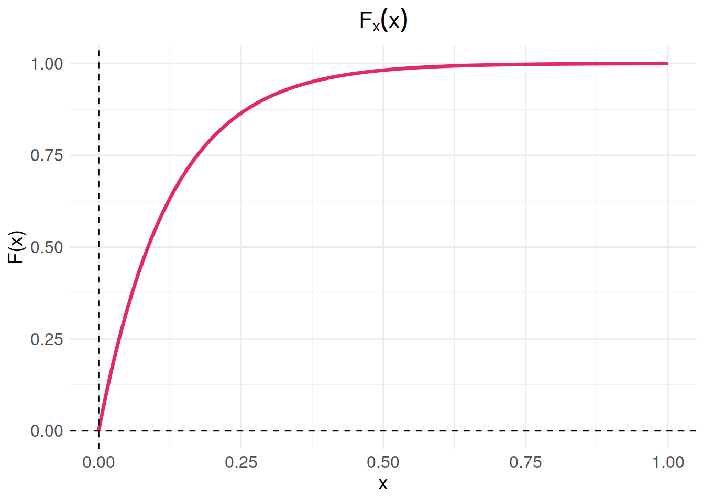
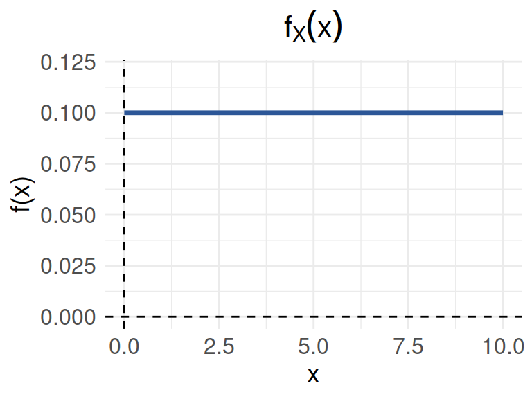

Suponga que el conjunto universal consta de los números enteros del 1 al 10.
Sea
\(A=\{2,3,4\}\), \(B=\{3,4,5\}\), \(C=\{5,6,7\}\)
Determine los elementos de los siguientes conjuntos:
Suponga que el conjunto \(U\) está
dado por \(U = \{ x | 0 \leq x \leq 2
\}\) . Sean los conjuntos A y B
definidos como:
\[A=\{ x | 1/2 \leq x \leq
1\}\]
\[B = \{x|1/4 \leq x \leq 3/4 \}\]
Describa los siguientes conjuntos:
Un cargamento de 1500 lavadoras contiene 400 defectuosas y 1100 no defectuosas. Se eligen al azar doscientas lavadoras (sin sustitución) y se clasifican.
Diez fichas numeradas del 1 al 10 se mezclan en una urna. Se sacan de
la urna dos fichas numeradas (X,Y) una y otra a la vez sin
sustitución. 쮺uál es la probabilidad de que X+Y=10 ?
Un lote consta de 10 artículos buenos, 4 con pequeños defectos y 2 con defectos graves. Se elige un artículo al azar. Encontrar la probabilidad de que :
Un mecanismo puede ponerse en cuatro posiciones digamos
a, b, c y d . Hay 8
de tales mecanismos en un sistema.
a y b con la misma frecuencia?Entre los números \(1,2,3 .... 50\)
se escoge un número al azar. 쮺uál es la probabilidad de que el número
escogido sea divisible por 6 o por 8?
La urna 1 contiene x bolas blancas e y
bolas rojas. La urna 2 contiene z bolas blancas y
v bolas rojas. Se escoge una bola al azar de la urna 1 y se
pone en la urna 2. Entonces se escoge una bola al azar de la urna 2.
쮺uál es la probabilidad de que esta bola sea blanca?
Suponga que una familia tiene cuatro hijos.
Se cree que la distribución de los grupos sanguíneos en Estados
Unidos en la Segunda Guerra Mundial era: tipo A, 41%;
tipo B, 9%; tipo AB, 4%; y
tipo O, 46%. Se estima que en esa época, el 4% de las
personas pertenecientes al tipo O fue clasificado como del
tipo A; el 88% de los del tipo A fue
correctamente clasificado; el 4% de los del tipo B se
clasificó como del tipo A, y el 10% de los del
tipo AB fue, igualmente, clasificado como del
tipo A. Un soldado fue herido y conducido a la enfermería.
Se le clasificó como del tipo A. 쮺uál es la probabilidad
de que tal grupo sea ciertamente el suyo?
Tomados de J. Susan Milto (2001)
En el colegio Anglo-Frances se imparten sólo los idiomas inglés y francés. El 80% de los alumnos estudian inglés y el resto francés. El 30% de los alumnos que cursan de inglés son socio del club musical del colegio, mientras de los que estudian francés son socio de dicho club el 40%. Si el director del colegio elige un alumno de manera aleatoria, 쯤ué tan probable es que dicho alumno pertenezca al club de musical? . Por otra parte el psicólogo del colegio afirma que estudiar inglés es un evento independiente de estudiar francés. 쯧sted que opina respecto a esta afirmación? (justifique su respuesta)
En una universidad de la región hay 4000 estudiantes distribuidos en tres grupos. Primeros semestre (1 a 3), mitad de carrera (4 a 7) y final de carrera (8 a 10). Esta población esta conformada por estudiantes que realizan actividades extracuricolares y aquellos que no participan en ninguna actividad, distribuidos como se muestra en la siguiente tabla:
| Participa en actividades del MU | No participa en actividades del MU | |
|---|---|---|
| Primeros semestres | 1250 | 1530 |
| Mitad de carrera | 465 | 350 |
| Final de carrera | 270 | 270 |
Se ha encomendado a un grupo de profesores consejeros, seleccionar un estudiante de este grupo para guiarlos académicamente en su proceso de formación. El grupo de profesores está conformado por Sandra, Isabel, David, Daniel y Gerardo
Sandra prefiere que el grupo de estudiantes a su cargo sean estudiantes de primeros semestre y que participan en actividades del Medio Universitario (MU) . Isabel en cambio los eligirá dentro del grupo de estudiantes que está finalizando carrera, dentro de los que prefieren no participar en actividades del MU. Por su parte David desea estudiantes sean del rango intermedio o mitad de carrera, pues ellos no han realizado la escogencia del énfasis. Daniel solicita un listado de los estudiantes que participan e actividades del MU y de ellos desea que el estudiante a su cargo esté cursando últimos semestre. Finalmente Gerardo solo quiere que el estudiante seleccionado para su acompañamiento sea de primeros semestre. Si en cada caso los estudiantes son selecionados de maneta aletatoria de toda la población tiene la mayor probabilidad de ver cumplido sus deseos?
Se escogen al azar 5 lámparas de 25 de las cuales 8 son defectuosas.
Hallar la probabilidad de que:
a. Ninguna de las lámparas
seleccionadas sea defectuosa. b. Exactamente una de las lámparas
seleccionadas sea defectuosa. c. Por lo menos una de las lámparas
seleccionadas no sea defectuosa
Un estudiante realiza dos exámenes en un mismo día. La probabilidad de que apruebe el primer examen es de 0.6 . La probabilidad de que apruebe el segundo examen es de 0.8; y la de que apruebe los dos exámenes es 0.5 :
El Departamento de crédito de una cadena de supermercados, informó que el 30% de sus ventas se pagan con efectivo o con cheque; 30% se paga con tarjeta de crédito y el resto con tarjeta débito. Veinte por ciento de las ventas realizadas con efectivo o cheque, noventa por ciento de las compras realizadas con tarjeta de crédito y el sesenta por ciento de las compras realizadas con tarjeta débito, son realizadas por más de 50.000. La señora Fatima acaba de comprar un vestido nuevo que le costó 120.000. 쯈ue es más probable que halla pagado su vestido con tarjeta de crédito o que lo halla hecho con tarjeta débito?
En una fábrica de artículos para protección biodegradables, cuatro operarios colocan etiquetas de caducidad en cada artículo al final de la línea de producción. Juan, quien coloca la fecha de caducidad en un 40 % de los paquetes no logra ponerla en uno de cada 200 paquetes; Nicolle, quien coloca en 30 % de los paquetes, no logra colocarla en uno de 100 paquetes; Sara, quien coloca etiquetas en el 15 % de los paquetes, no lo hace una vez en 90 paquetes; y Nelson que fecha 15 % de los paquetes, falla en uno de cada 200 paquetes. Si un cliente se queja de que su paquete no muestra la fecha de caducidad. 쮺uál de los empleados es el más probable culpable de esta omisión?
Uno de los laboratorios de la universidad tiene un esquema para recibir sus pedidos de insumos para sus investigadores. El plan tiene dos etapas. Primero el laboratorista selecciona una caja de 15 artículos y luego en una segunda etapa, extrae una muestra de 3 de ellos y los examina en búsqueda de defectos. Si no se encuentran artículos defectuosos en la revisión, el pedido es aceptado y es recibido por los encargados de la oficina de compras. En caso contrario, se regresa a su proveedor con el fin de que revise la totalidad de los artículos y se cerciore que todos están buenos. Por experiencia se estima que por cada caja de 15 artículos, hay 3 defectuosos, debido a problemas en el transporte. Bajo este esquema, 쯤ué tan probable es que un pedido sea aceptado?
Examen de drogas Muchas universidades aplican exámenes para detectar el uso de drogas en estudiantes, con la finalidad de mejorar la salud y el bienestar en el campus, y reducir el riesgo de comportamiento inapropiado, accidentes y problemas académicos. Las personas que se oponen a esta práctica argumentan que este procedimiento puede etiquetar injustamente a algunos estudiantes, dado que las pruebas no son 100% confiables. Supongamos que una universidad utiliza una prueba con un 98% de exactitud, la cual identifica a un estudiante como usuario o no usuario de drogas con una probabilidad de .98. Para reducir la posibilidad de error, se solicita a cada estudiante que realice dos pruebas. Si los resultados de las dos pruebas en el mismo estudiante son eventos independientes, 쯖uáles son las probabilidades de los siguientes eventos?
Un estudiante que no consume drogas falle ambas pruebas.
Se detecte a un estudiante como usuario de drogas (falla en al menos una prueba).
Un estudiante que consume drogas pase ambas pruebas.
En una universidad de la región hay 4000 estudiantes distribuidos en tres grupos. Primeros semestre (1 a 3), mitad de carrera (4 a7) y final de carrera (8 a 10). Esta población esta conformada por estudiantes que realizan actividades extracuricolares y aquellos que no participan en ninguna actividad, distribuidos como se muestra en la siguiente tabla:
library(knitr)
x <- c(1250, 465, 270, 1530, 350, 270)
m <- matrix(x, nrow = 3)
colnames(m) <- c("MU", "MU*")
rownames(m) <- c("Primeros semestres", "Mitad de carrera", "Final de carrera")
kable(m, caption = "Tabla de Resultados por Etapa de la Carrera", align = "c")| MU | MU* | |
|---|---|---|
| Primeros semestres | 1250 | 1530 |
| Mitad de carrera | 465 | 350 |
| Final de carrera | 270 | 270 |
Se ha encomendado a un grupo de profesores consejeros, seleccionar un estudiante de este grupo para guiarlos académicamente en su proceso de formación. El grupo de profesores está conformado por Sandra, Isabel, David, Daniel y Gerardo
Sandra prefiere que el grupo de estudiantes a su cargo sean estudiantes de primeros semestre y que participan en actividades del Medio Universitario (MU) . Isabel en cambio los eligirá dentro del grupo de estudiantes que está finalizando carrera, dentro de los que prefieren no participar en actividades del MU. Por su parte David desea estudiantes sean del rango intermedio o mitad de carrera, pues ellos no han realizado la escogencia del énfasis. Daniel solicita un listado de los estudiantes que participan e actividades del MU y de ellos desea que el estudiante a su cargo esté cursando últimos semestre. Finalmente Gerardo solo quiere que el estudiante seleccionado para su acompañamiento sea de primeros semestre. Si en cada caso los estudiantes son seleccionados de manera aleatoria de toda la población tiene la mayor probabilidad de ver cumplido sus deseos?
Clasifique las siguientes variables aleatorias como discretas o continuas:
Una empresa de envíos de productos está interesada en medir el tiempo que pasa entre la recepción de pedidos urgentes (por ejemplo, pedidos que necesitan ser entregados en menos de 24 horas). El tiempo que pasa, en horas, entre la llegada de estos pedidos urgentes sigue una distribución de probabilidad con la siguiente función de distribución acumulada:
\[F_{_{X}}(x) = \left \{ \begin{matrix} 0 & \mbox{ , } x \leq 0\\ 1-exp\{-8x \} & x \geq 0 \end{matrix}\right. \]
Calcule la probabilidad de que el tiempo que transcurre entre la llegadas de dos pedidos urgentes consecutivos sea menor a 12 minutos.
# Cargar ggplot2
library(ggplot2)
# Definir la función F(x)
Fx <- function(x) {
ifelse(x <= 0, 0, 1 - exp(-8 * x))
}
# Crear un rango de valores para x
x_values <- seq(0, 1, length.out = 500)
# Calcular los valores de F(x)
Fx_values <- Fx(x_values)
# Crear un dataframe con los valores
data <- data.frame(x = x_values, Fx = Fx_values)
# Graficar usando ggplot2
ggplot(data, aes(x = x, y = Fx)) +
geom_line(color = c3, size = 1.2) +
labs(x = "x", y = "F(x)", title = expression(F[x](x))) +
theme_minimal() +
xlim(0, 1) +
ylim(0, 1) +
theme(
plot.title = element_text(hjust = 0.5, size = 16),
axis.title = element_text(size = 14),
axis.text = element_text(size = 12)
) +
geom_hline(yintercept = 0, linetype = "dashed") +
geom_vline(xintercept = 0, linetype = "dashed")
Una variable aleatoria continua \(X\), que puede tomar valores entre \(x=2\) y \(x=5\), tiene una función de densidad data por \(f(x)=2(1*x)/27\).
Calcule: * \(P(X < 4)\) * \(P(3 \leq X < 4)\) * Represente la función \(f(x)\) gráficamente
Suponga que cierto tipo de pequeñas empresas de procesamiento de datos están tan especializadas que algunas tienen dificultades para obtener utilidades durante su primer año de operación. La función de densidad de probabilidad está dada por:
\[f_{_{Y}}(y) = \left \{ \begin{matrix} ky^4 (1-y)^3 & \mbox{ , } 0 \leq y \leq 1\\ 0 & \mbox{en otro caso } \end{matrix}\right. \]
Calcule la distribución de probabilidad par el número de discos compactos de jazz, de una colección que consta de 5 de jazz, 2 de música clásica y 3 de rock, al seleccionar de esta colección 4 de manera aleatoria. Explique sus resultados utilizando una fórmula.
De una caja que contiene 4 monedad de 10 centavos y 2 monedas de 5 centavos se seleccionan 3 monedas de manera aleatoria y sin reemplazo. calcule la distribución de probabilidad para el total \(T\) de las 3 monedas . Exprese la distribución de probabilidad de forma gráfica
Con base en las pruebas extensas, el fabricante de una lavadora determinó que el tiempo \(Y\) (en años) para que el electrodoméstico requiera una reparación mayor se obtiene mediante la siguiente función de densidad de probabilidad :
\[f_{_{Y}}(y) = \left \{ \begin{matrix} \dfrac{1}{4} exp\{-y/4\} & \mbox{ , } y \geq 0\\ 0 & \mbox{en otro caso } \end{matrix}\right. \]
Los críticos considerarían que la lavadora es una ganga si no hay una probabilidad de que requiera una reparación mayor antes del sexto año. 쯉e puede considerar la lavadora como una ganga?
쮺uál es la probabilidad de que a lavadora requiera una reparación mayor durante el primer año?
Represente la función \(f(x)\) gráficamente
# Cargar ggplot2
library(ggplot2)
# Definir la función f_Y(y)
fy <- function(y) {
ifelse(y >= 0, (1 / 4) * exp(-y / 4), 0)
}
# Crear un rango de valores para y
y_values <- seq(0, 20, length.out = 500)
# Calcular los valores de f_Y(y)
fy_values <- fy(y_values)
# Crear un dataframe con los valores
data_fy <- data.frame(y = y_values, fy = fy_values)
# Graficar usando ggplot2
ggplot(data_fy, aes(x = y, y = fy)) +
geom_line(color = c3, size = 1.2) +
labs(x = "y", y = "f(y)", title = expression(f[Y](y))) +
theme_minimal() +
xlim(0, 20) +
ylim(0, 0.3) +
theme(
plot.title = element_text(hjust = 0.5, size = 16),
axis.title = element_text(size = 14),
axis.text = element_text(size = 12)
) +
geom_hline(yintercept = 0, linetype = "dashed") +
geom_vline(xintercept = 0, linetype = "dashed")Sea el número de llamadas telefónicas que recibe un conmutador durante un intervalo de 5 minutos una variable aleatoria \(X\) con la siguiente función de distribución de probabilidad:
\[f(x)= \dfrac{exp\{-2\}\hspace{.2cm} 2^x}{x!}\hspace{.3cm} \mbox{ , para }\hspace{.3cm} x = 01,2,3,4,5.... \]
El congestionamiento de pasajeros es un problema de servicio en los aeropuertos, en los cuales se instalan trenes para reducir la congestión. cuando se usa el tren el tiempo \(X\), en minutos, que toma viajar desde la terminal principal hasta una explanada específica tiene la siguiente función de densidad:
\[f_{_{X}}(x) = \left \{ \begin{matrix} \dfrac{1}{10} & \mbox{ , } 0 \leq y \leq 10\\ 0 & \mbox{en otro caso } \end{matrix}\right. \]
# Cargar ggplot2
library(ggplot2)
# Definir la función f_X(x)
fx <- function(x) {
ifelse(x >= 0 & x <= 10, 1/10, 0)
}
# Crear un rango de valores para x
x_values <- seq(0, 10, length.out = 500)
# Calcular los valores de f_X(x)
fx_values <- fx(x_values)
# Crear un dataframe con los valores
data_fx <- data.frame(x = x_values, fx = fx_values)
# Graficar usando ggplot2
ggplot(data_fx, aes(x = x, y = fx)) +
geom_line(color = c6, size = 1.2) +
labs(x = "x", y = "f(x)", title = expression(f[X](x))) +
theme_minimal() +
xlim(0, 10) +
ylim(0, 0.12) +
theme(
plot.title = element_text(hjust = 0.5, size = 16),
axis.title = element_text(size = 14),
axis.text = element_text(size = 12)
) +
geom_hline(yintercept = 0, linetype = "dashed") +
geom_vline(xintercept = 0, linetype = "dashed")
Problemas tomado de walpole (2006)
10. Suponga que \(f(x)=exp\{-x\}\), para \(0 \leq x \leq 1\), \(0\) para cualquier otro caso.
Determine : * \(P(1 < X)\) * \(P(1 < X < 2.5\) * \(P(X = 3\) * \(P(X < 4)\) * Los valores de \(Me\), \(Q_{1}\) y \(Q_{3}\)
Para una variable aleatoria con función de densidad : \(f(x)= x/8\) para \(3 < X < 5\).
Determine : * \(P(X < 4)\) * \(P(X > 3.5)\) * \(P(4 < X < 5)\) * \(P((X < 3.5) \cup (X > 4.5))\) * el valor de \(Me\)
Suponga que \(X\) tiene una función de distribución acumulada :
\[F_{_{X}}(x) = \left \{ \begin{matrix} 0 & \mbox{ , } x \leq 0\\ 2x & \mbox{, } x < 0 < x 5 \\ 1 & \mbox{ , } 5 \leq 5 \end{matrix}\right. \]
Determine: * \(P(X < 4)\) * \(P(X = 1.5)\) * \(P(X > 3)\) * \(P(0.5 < X < 2.7\)
Para la variable aleatoria que tiene la siguiente función de distribución de probabilidad :
| \(x\) | \(-2\) | \(-1\) | \(0\) | \(1\) | \(2\) |
|---|---|---|---|---|---|
| \(f(x)\) | \(1/8\) | \(2/8\) | \(2/8\) | \(2/8\) | \(1/8\) |
Determine: * \(P(X \leq 2)\) * \(P(X > 3)\) * \(P(-1 \leq X \leq 1)\) * \(P(X < 3.5 ; X > 4.5)\) * El valor de \(Me\)
Para una variable con función de distribución de probabilidad :
\[f_{_{X}}(x) = \left \{ \begin{matrix} \dfrac{2x + 1}{25} & \mbox{ , } x=0, 1, 2, 3, 4\\ 0 & \mbox{en otro caso } \end{matrix}\right. \]
Determine: * \(P(X =1)\) * \(P(X \leq 1)\) * \(P(2 \leq X < 4)\)
# Cargar ggplot2
library(ggplot2)
# Definir la función f_X(x)
fx <- function(x) {
ifelse(x %in% 0:4, (2*x + 1)/25, 0)
}
# Crear un rango de valores para x
x_values <- 0:4
# Calcular los valores de f_X(x)
fx_values <- fx(x_values)
# Crear un dataframe con los valores
data_fx <- data.frame(x = x_values, fx = fx_values)
# Graficar usando ggplot2 en un diagrama de puntos
ggplot(data_fx, aes(x = x, y = fx)) +
geom_point(color = c6, size = 2) +
#geom_line(color = "blue", linetype = "dashed") +
labs(x = "x", y = "f(x)", title = expression(f[X](x))) +
theme_minimal() +
ylim(0, 0.4) +
theme(
plot.title = element_text(hjust = 0.5, size = 16),
axis.title = element_text(size = 14),
axis.text = element_text(size = 12)
)Para una variable aleatoria con función de distribución de probabilidad: \(f(x)= (3/4)(1/4)^{x}\), para \(x=0, 1, 2, 3,...\)
Sponga que \(X\) tiene una función de probabilidad acumulada:
\[F_{_{X}}(x) = \left \{ \begin{matrix} 0 & \mbox{ , } x \leq 0\\ 0.2 x & \mbox{, } 0 < x < 5 \\ 1 & \mbox{ , } x \geq 5 \end{matrix}\right. \]
Determine: * \(P(X < 2.8)\)
Fx=function(x){0.2*x }
Fx(2.8)[1] 0.56El tiempo de reparación (en minutos) de una máquina fotocopiadora tiene una función de densidad:
\[f_{_{X}}(x) = \left \{ \begin{matrix} \dfrac{1}{22} exp\{-x/22\} & \mbox{ , } x > 0\\ 0 & \mbox{en otro caso } \end{matrix}\right. \]
Cuando el profesor de Probabilidad y Estadística se preparaba para imprimir el cuestionario del segundo examen parcial, fue enterado por la secretaria del departamento que la máquina fotocopiadora se había averiado y que el técnico había acabado de llegar en ese instante y empezado a repararla. El profesor debe contar con por lo menos 10 minutos extras - tiempo de fotocopiado de 35 exámenes, organizar sus respectivas hojas de respuestas, sumado tiempo de su desplazamiento hasta el salón de clase, arreglo de las mesas y entrega de los cuestionarios a los estudiantes. Al mirar el reloj, el profesor observa que faltan 20 minutos para la hora en que debe empezar el examen y decide esperar a que el técnico repare la fotocopiadora. 쮼s acertada o no la decisión que tomó el profesor? Justifique su respuesta.
18. Suponga que \(f(x)=exp\{-x\}\), para \(0 \leq x \leq 1\), \(0\) para cualquier otro caso.
Determine : * \(E[X]\) * \(V[X]\) * \(P_{20}\)
Para una variable aleatoria con función de densidad : \(f(x)= x/8\) para \(3 < X < 5\).
Determine : * \(\mu_{_{X}}\) * \(\sigma_{_{X}}\)
Suponga que \(X\) tiene una función de distribución acumulada:
\[F_{_{X}}(x) = \left \{ \begin{matrix} 0 & \mbox{ , } x \leq 0\\ \dfrac{1}{5}x & \mbox{, } 0 \leq x \leq 5 \\ 1 & \mbox{ , } x \geq 5 \end{matrix}\right. \]
Determine : * \(E[X]\) * \(V[X]\) * \(P_{50}\) * Se podría obtener el coeficiente de variación?. En caso afirmativo, 쯤ue valor tendría?
Para la variable aleatoria que tiene la siguiente función de distribución de probabilidad :
| \(x\) | \(-2\) | \(-1\) | \(0\) | \(1\) | \(2\) |
|---|---|---|---|---|---|
| \(f(x)\) | \(1/8\) | \(2/8\) | \(2/8\) | \(2/8\) | \(1/8\) |
Determine : * \(E[X]\) * \(V[X]\)
Para una variable con función de distribución de probabilidad :
\[f_{_{X}}(x) = \left \{ \begin{matrix} \dfrac{2x * 1}{25} & \mbox{ , } x=0, 1, 2, 3, 4\\ 0 & \mbox{en otro caso } \end{matrix}\right. \]
Determine :
Para una variable aleatoria con función de distribución de probabilidad: \(f(x)= (3/4)(1/4)^{x}\), para $x=0, 1, 2, 3, $
Determine :
Problemas tomados de Mongomery(2003)
Una de las preocupaciones que tienen los padres hoy en dia está relacionada con el tiempo que pasan sus hijos usando celular. Un estudio determinó que el número de llamadas que un joven realiza durante un dia es una variable aleatoria (\(X\)) con función de distribución :
\[f_{_{X}}(x) = \left \{ \begin{matrix} \dfrac{8^{x}\hspace{.2cm} exp\{-8\}}{x!} & \mbox{ , para } \hspace{.3cm} x = 0,1,2,3,4,5,.....\\ 0 & \mbox{en otro caso } \end{matrix}\right. \]
El estudio afirma también que los jóvenes en promedio reciben al rededor de 12 llamadas por día, valor que es considerado muy alto, debido a que a esa edad por lo regular no se tienen actividades económicas que lo ameriten. También mencionan que debido a que se ha logrado identificar la función de distribución de probabilidad es fácil establecer que se trata de una variable con un comportamiento homogéneo. 쮼stá de acuerdo con la información suministrada en el artículo? . Justifique su respuesta.
Para una variable aleatoria con distribución binomial \(X \sim binom(x, n=10, p=0.5)\) . Determine: la función de distribución asociada a \(X\).
Suponga que X tiene una distribución Poisson con media \(\lambda=4\) (\(X \sim pois(x,\lambda=4)\)). Determine:
En un cargamento grande de llantas para automóviles, el 5맚iene imperfecciones. Se eligen de manera aleatoria 4 llantas para ser instalada en un automóvil. (Sea X el número de llantas con imperfecciones. \(X \sim binom(n=4, p=0.05\) )
Los clientes llegan al mostrador de una tienda de acuerdo con una variable aleatoria Poisson con una frecuencia promedio de ocho clientes por hora.
Se está desarrollando una nueva variedad de maíz en una extensión de experimentación agrícola. Se espera que tenga una tasa de germinación del 90. Para verificar esto, se plantan 20 semillas en suelos de idéntica composición y se les dedican los mismos cuidados. Si la cifra 90만s correcta, 쯖uántas semillas se espera que germinen? Si sólo germinan 15 o menos, 쯛ay razón para sospechar de la cifra 90?
Un examen de Probabilidad consta de 100 preguntas de selección múltiple, cada una con cuatro opciones de respuesta. Maria responde cada pregunta al azar y sus respuestas son independientes
Para una variable aleatoria \(X\sim unif(x,a,b)\) con \(a=10\) y \(b=20\) determine:
Para una variable \(Z\sim N(0,1)\), determine el área:
En cada caso realice un bosquejo del área que representa la probabilidad
Para una variable \(Z\sim N(0,1)\), determine el área:
En cada caso represente gráficamente los valores solicitados
Para una variable aleatoria continua \(X\sim norm(\mu=150, \sigma^{2}=1000)\) determine:
Sea \(X\) una variable aleatoria con distribución exponencial . (\(X\sim exp(\lambda=2)\)). Determine:
Doris y Mauricio quedan en encontrarse entre las 5:00 pm y 6:00 pm en Unicentro. Sea \(X\) el tiempo que transcurre entre las 5:00 pm y el momento en que llega Doris y \(Y\) el tiempo que transcurre entre las 5:00 pm y el momento en que llega Mauricio. Suponga que X y Y son variables aleatorias independientes uniformemente distribuidas en el intervalo [0; 60 en minutos.
Para una variable aleatoria \(Y\) que representa las puntuaciones obtenidas en una prueba y cuya distribución es aproximadamente normal con media de \(480\) puntos y desviación estándar de \(90\) puntos, determine:
Suponga que la estatura de las personas en una población sigue la curva normal con media de 64.3 pulgadas y desviación estándar de 2.6 pulgadas.
Un indicador importante para el control del estado físico de una persona es el Indice de Masa Corporal (IMC). Este indice se obtiene al dividir el valor de la masa corporal de una persona (\(kg\)) entre el cuadrado de la talla de la persona (\(m^{2}\)). En su artículo W.Bolch y E Farfan establecen que este indice (en \(kg/m^{2}\))se distribuye aproximadamente lognormal con media \(\mu=3.215\) y \(\sigma = 0.157\) para hombre con edad entre 17 y 25 años. La organización mundial de la salud ha establecido rangos para este indice y los ha clasificado de acuerdo al riesgo así: De 25.0 a 29.9, sobrepeso o no obeso ; Entre 30 a 34.9 : Obesidad clase 1 o de bajo riesgo. Más de 40: Obesidad clase 3 o de alto riesgo. Con el fin de establecer una campaña sobre buenos hábitos en el deporte y la dieta el Centro de Bienestar Universitario desea conocer las proporciones de una población de jóvenes con estas edades, en cada uno de los rangos establecidos.
Las puntuaciones de una prueba estandarizada se distribuyen normalmente con media de 480 y desviación estándar de 90.
Supongamos que la estatura de mujeres en una población sigue la curva normal con media de 163 cm y desviación estándar de 7 cm.